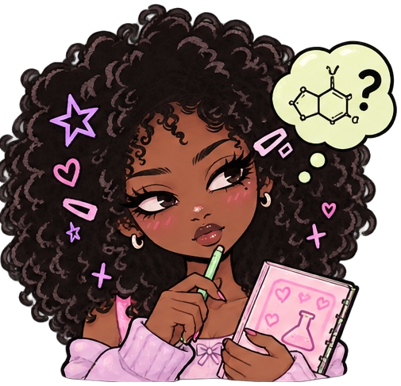

cuidar da pele
não precisa de
custar uma fortuna!
Encontra alternativas mais acessíveis, descobre para que servem os ingredientes e escolhe com mais informação. ♡
preços mais baixos.↗ descodificador de ingredientesPalavras difíceis?
Nós explicamos.↗ ciência sem complicaçõesQueres saber como
funcionam as fórmulas?↗
✦ VAMOS INVESTIGAR ✦
o detetive de dupes ♡
Escolhe dois produtos para veres os ingredientes em comum, as diferenças e qual custa menos.
DE FÓRMULA ✓
Catálogo real, pesquisa educativa: As listas INCI foram consultadas em páginas oficiais das marcas. Preços em EUR são referências externas, não preços em Angola. A semelhança das listas não comprova eficácia nem segurança.
♡ A TUA EXPERIÊNCIA NO LABORATÓRIO
comparar duas fórmulas

Modo análise ativado! ✦Vamos descobrir o que estas fórmulas têm em comum! ♡
Preços locais (opcional) ♡ Introduz valores em Kz que confirmaste em lojas para comparar custos. Ficam guardados apenas neste navegador.
✧ O CANTINHO DA QUÍMICA
descodificador de ingredientes!
Cola uma lista de ingredientes de skincare. Vamos identificar os ingredientes da nossa lista inicial e explicar as suas funções em português simples.
Ciência em palavras simples! ✨Cola uma lista e eu ajudo-te a compreender os ingredientes.
vamos descobrir a química!
As explicações dos ingredientes vão aparecer aqui.
✦ TRANSPARÊNCIA ✦
de onde vêm os dados?
As listas INCI foram transcritas de páginas oficiais das marcas. Os preços em EUR são referências europeias para o tamanho indicado, não ofertas em Angola. Confirma sempre a embalagem e a data.
Atualização manual: 30/10/2026 · Projeto educativo, sem afiliação com as marcas. Não recolhemos dados em servidores; favoritos, preços e feedback ficam no teu navegador.
✳ A TUA COLEÇÃO
produtos guardados ♡
Toca no coração para guardar um produto neste dispositivo.
A tua coleção fofinha ♡Os teus favoritos ficam guardados neste navegador.
✦ TESTAR & MELHORAR
ajuda a melhorar o laboratório! ♡
Testa o site e regista as tuas observações. As respostas não são enviadas para nenhum servidor.
O meu mini-relatório de testes ✳
Métricas guardadas apenas neste dispositivo. Não representam o total de utilizadores do site.
OLÁ DO LABORATÓRIO ♡
fórmulas giras.
escolhas inteligentes.
O FormulaLab é um projeto estudantil que junta química cosmética, programação e design. Ajuda-te a compreender o que existe nos produtos, sem fingir que uma lista de ingredientes conta a história toda.
♡ Protótipo com fontes de marcas e preços de referência europeus. Os rótulos podem mudar e a disponibilidade e os preços em Angola ainda precisam de verificação.